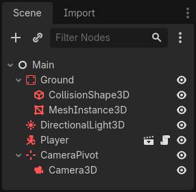
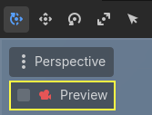
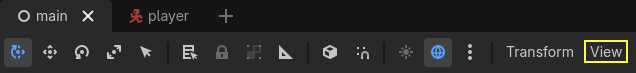
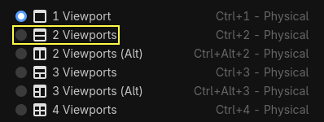
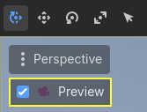
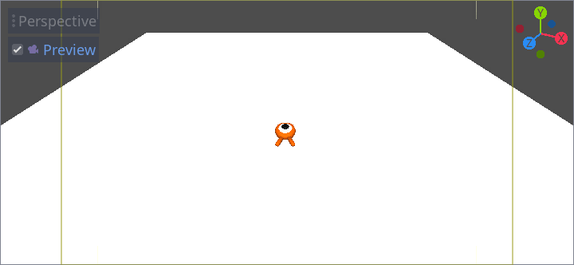

Moving the player with code
It's time to code! We're going to use the input actions we created in the last part to move the character.
Note
For this project, we will be following the Godot naming conventions.
GDScript: Classes (nodes) use PascalCase, variables and functions use snake_case, and constants use ALL_CAPS (See GDScript style guide).
C#: Classes, export variables and methods use PascalCase, private fields use _camelCase, local variables and parameters use camelCase (See C# style guide). Be careful to type the method names precisely when connecting signals.
Right-click the Player node and select Attach Script to add a new script to
it. In the popup, set the Template to Empty before pressing the Create
button. We set it to Empty because we want to write our own code for
player movement.

Let's start with the class's properties. We're going to define a movement speed, a fall acceleration representing gravity, and a velocity we'll use to move the character.
extends CharacterBody3D
# How fast the player moves in meters per second.
@export var speed = 14
# The downward acceleration when in the air, in meters per second squared.
@export var fall_acceleration = 75
var target_velocity = Vector3.ZERO
using Godot;
public partial class Player : CharacterBody3D
{
// Don't forget to rebuild the project so the editor knows about the new export variable.
// How fast the player moves in meters per second.
[Export]
public int Speed { get; set; } = 14;
// The downward acceleration when in the air, in meters per second squared.
[Export]
public int FallAcceleration { get; set; } = 75;
private Vector3 _targetVelocity = Vector3.Zero;
}
These are common properties for a moving body. The target_velocity is a 3D vector
combining a speed with a direction. Here, we define it as a property because
we want to update and reuse its value across frames.
Note
The values are quite different from 2D code because distances are in meters. While in 2D, a thousand units (pixels) may only correspond to half of your screen's width, in 3D, it's a kilometer.
Let's code the movement. We start by calculating the input direction vector
using the global Input object, in _physics_process().
func _physics_process(delta):
# We create a local variable to store the input direction.
var direction = Vector3.ZERO
# We check for each move input and update the direction accordingly.
if Input.is_action_pressed("move_right"):
direction.x += 1
if Input.is_action_pressed("move_left"):
direction.x -= 1
if Input.is_action_pressed("move_back"):
# Notice how we are working with the vector's x and z axes.
# In 3D, the XZ plane is the ground plane.
direction.z += 1
if Input.is_action_pressed("move_forward"):
direction.z -= 1
public override void _PhysicsProcess(double delta)
{
// We create a local variable to store the input direction.
var direction = Vector3.Zero;
// We check for each move input and update the direction accordingly.
if (Input.IsActionPressed("move_right"))
{
direction.X += 1.0f;
}
if (Input.IsActionPressed("move_left"))
{
direction.X -= 1.0f;
}
if (Input.IsActionPressed("move_back"))
{
// Notice how we are working with the vector's X and Z axes.
// In 3D, the XZ plane is the ground plane.
direction.Z += 1.0f;
}
if (Input.IsActionPressed("move_forward"))
{
direction.Z -= 1.0f;
}
}
Here, instead of _process(), we're going to make all calculations using the _physics_process()
virtual function. It's designed specifically for physics-related code like moving a
kinematic or rigid body. It updates the node using fixed time intervals.
See also
To learn more about the difference between _process() and
_physics_process(), see Idle and Physics Processing.
We start by initializing a direction variable to Vector3.ZERO. Then, we
check if the player is pressing one or more of the move_* inputs and update
the vector's x and z components accordingly. These correspond to the
ground plane's axes.
These four conditions give us eight possibilities and eight possible directions.
In case the player presses, say, both W and D simultaneously, the vector will
have a length of about 1.4. But if they press a single key, it will have a
length of 1. We want the vector's length to be consistent, and not move faster diagonally. To do so, we can
call its normalized() method.
func _physics_process(delta):
#...
if direction != Vector3.ZERO:
direction = direction.normalized()
# Setting the basis property will affect the rotation of the node.
$Pivot.basis = Basis.looking_at(direction)
public override void _PhysicsProcess(double delta)
{
// ...
if (direction != Vector3.Zero)
{
direction = direction.Normalized();
// Setting the basis property will affect the rotation of the node.
GetNode<Node3D>("Pivot").Basis = Basis.LookingAt(direction);
}
}
Here, we only normalize the vector if the direction has a length greater than zero, which means the player is pressing a direction key.
We compute the direction the $Pivot is looking by creating a Basis
that looks in the direction direction.
Then, we update the velocity. We have to calculate the ground velocity and the
fall speed separately. Be sure to go back one tab so the lines are inside the
_physics_process() function but outside the condition we just wrote above.
func _physics_process(delta):
#...
if direction != Vector3.ZERO:
#...
# Ground Velocity
target_velocity.x = direction.x * speed
target_velocity.z = direction.z * speed
# Vertical Velocity
if not is_on_floor(): # If in the air, fall towards the floor. Literally gravity
target_velocity.y = target_velocity.y - (fall_acceleration * delta)
# Moving the Character
velocity = target_velocity
move_and_slide()
public override void _PhysicsProcess(double delta)
{
// ...
if (direction != Vector3.Zero)
{
// ...
}
// Ground velocity
_targetVelocity.X = direction.X * Speed;
_targetVelocity.Z = direction.Z * Speed;
// Vertical velocity
if (!IsOnFloor()) // If in the air, fall towards the floor. Literally gravity
{
_targetVelocity.Y -= FallAcceleration * (float)delta;
}
// Moving the character
Velocity = _targetVelocity;
MoveAndSlide();
}
The CharacterBody3D.is_on_floor() function returns true if the body collided with the floor in this frame. That's why
we apply gravity to the Player only while it is in the air.
For the vertical velocity, we subtract the fall acceleration multiplied by the delta time every frame. This line of code will cause our character to fall in every frame, as long as it is not on or colliding with the floor.
The physics engine can only detect interactions with walls, the floor, or other bodies during a given frame if movement and collisions happen. We will use this property later to code the jump.
On the last line, we call CharacterBody3D.move_and_slide() which is a powerful
method of the CharacterBody3D class that allows you to move a character
smoothly. If it hits a wall midway through a motion, the engine will try to
smooth it out for you. It uses the velocity value native to the CharacterBody3D
And that's all the code you need to move the character on the floor.
Here is the complete player.gd code for reference.
extends CharacterBody3D
# How fast the player moves in meters per second.
@export var speed = 14
# The downward acceleration when in the air, in meters per second squared.
@export var fall_acceleration = 75
var target_velocity = Vector3.ZERO
func _physics_process(delta):
var direction = Vector3.ZERO
if Input.is_action_pressed("move_right"):
direction.x += 1
if Input.is_action_pressed("move_left"):
direction.x -= 1
if Input.is_action_pressed("move_back"):
direction.z += 1
if Input.is_action_pressed("move_forward"):
direction.z -= 1
if direction != Vector3.ZERO:
direction = direction.normalized()
# Setting the basis property will affect the rotation of the node.
$Pivot.basis = Basis.looking_at(direction)
# Ground Velocity
target_velocity.x = direction.x * speed
target_velocity.z = direction.z * speed
# Vertical Velocity
if not is_on_floor(): # If in the air, fall towards the floor. Literally gravity
target_velocity.y = target_velocity.y - (fall_acceleration * delta)
# Moving the Character
velocity = target_velocity
move_and_slide()
using Godot;
public partial class Player : CharacterBody3D
{
// How fast the player moves in meters per second.
[Export]
public int Speed { get; set; } = 14;
// The downward acceleration when in the air, in meters per second squared.
[Export]
public int FallAcceleration { get; set; } = 75;
private Vector3 _targetVelocity = Vector3.Zero;
public override void _PhysicsProcess(double delta)
{
var direction = Vector3.Zero;
if (Input.IsActionPressed("move_right"))
{
direction.X += 1.0f;
}
if (Input.IsActionPressed("move_left"))
{
direction.X -= 1.0f;
}
if (Input.IsActionPressed("move_back"))
{
direction.Z += 1.0f;
}
if (Input.IsActionPressed("move_forward"))
{
direction.Z -= 1.0f;
}
if (direction != Vector3.Zero)
{
direction = direction.Normalized();
// Setting the basis property will affect the rotation of the node.
GetNode<Node3D>("Pivot").Basis = Basis.LookingAt(direction);
}
// Ground velocity
_targetVelocity.X = direction.X * Speed;
_targetVelocity.Z = direction.Z * Speed;
// Vertical velocity
if (!IsOnFloor()) // If in the air, fall towards the floor. Literally gravity
{
_targetVelocity.Y -= FallAcceleration * (float)delta;
}
// Moving the character
Velocity = _targetVelocity;
MoveAndSlide();
}
}
Testing our player's movement
We're going to put our player in the Main scene to test it. To do so, we need
to instantiate the player and then add a camera. Unlike in 2D, in 3D, you won't
see anything if your viewport doesn't have a camera pointing at something.
Save your Player scene and open the Main scene. You can click on the Main
tab at the top of the editor to do so.

If you closed the scene before, head to the FileSystem dock and double-click
main.tscn to re-open it.
To instantiate the Player, right-click on the Main node and select Instantiate
Child Scene.

In the popup, double-click player.tscn. The character should appear in the
center of the viewport.
Adding a camera
Let's add the camera next. Like we did with our Player's Pivot, we're
going to create a basic rig. Right-click on the Main node again and select
Add Child Node. Create a new Marker3D, and name it CameraPivot.
Select CameraPivot and add a child node Camera3D to it.
Your scene tree should look similar to this.

Notice the Preview checkbox that appears in the top-left of the 3D view when you have the Camera selected. You can click it to preview the in-game camera projection.

We're going to use the Pivot to rotate the camera as if it was on a crane. Let's first split the 3D view to be able to freely navigate the scene and see what the camera sees.
In the toolbar right above the viewport, click on View, then 2 Viewports. You can also press Ctrl + 2 (Cmd + 2 on macOS).


On the bottom view, select your Camera3D and turn on camera Preview by clicking the checkbox.

In the top view, make sure your Camera3D is selected and move the camera about
19 units on the Z axis (drag the blue arrow).

Here's where the magic happens. Select the CameraPivot and rotate it -45
degrees around the X axis (using the red circle). You'll see the camera move as
if it was attached to a crane.

You can run the scene by pressing F6 (Cmd + R on macOS) and press the arrow keys to move the character.

We can see some empty space around the character due to the perspective projection. In this game, we're going to use an orthographic projection instead to better frame the gameplay area and make it easier for the player to read distances.
Select the Camera again and in the Inspector, set the Projection to
Orthogonal and the Size to 19. The character should now look flatter and
the ground should fill the background.
Note
When using an orthogonal camera in Godot 4, directional shadow quality is dependent on the camera's Far value. The higher the Far value, the further away the camera will be able to see. However, higher Far values also decrease shadow quality as the shadow rendering has to cover a greater distance.
If directional shadows look too blurry after switching to an orthogonal
camera, decrease the camera's Far property to a lower value such as
100. Don't decrease this Far property too much, or objects in the
distance will start disappearing.

Test your scene and you should be able to move in all 8 directions and not glitch through the floor!
Ultimately, we have both player movement and the view in place. Next, we will work on the monsters.